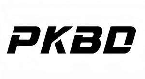

Trade Mark Journal No.2025/038 19 September 2025
UK00004261311 9 September 2025 (6,9)

- Class 6
- Metal shower grab bars; Handrails of metal for baths and showers; Metal fence posts; Metal chainlink fences; Wire fences; Metal chainlink fencing; Metal lawn edging; Boundary rails of metal; Metal boundary posts; Metal garden stakes; Dividing wall panels of metal; Animals (Metal cages for wild -); Metal crates for animal transportation; Stalls [structures] of metal for animals; Metal plant cages; Trellis (Metal -) for supporting plants; Plant hangers of metal; Securing wire for plants; Metal wire cloches for protecting plants; Metal step-in fence posts; Metal containers for storage; Storage containers of metal; Tool storage containers of metal [empty].
- Class 9
- Karaoke machines; Karaoke equipment; Speakers; Speakers [audio equipment]; Graphic decoders for use with audio karaoke systems; Tablet computer cases; Protective films for tablet computers; Protective covers for tablet computers; Protective films for tablets; Protective films adapted for mobile phone screens; Tempered glass screen protectors for smartphones; Stylus [light pens]; Stylus pens for touchscreens; Computer styluses; Electronic styluses; Capacitive finger sleeves for touchscreen devices; Touch screen pens; Cases for smartphone incorporating a keyboard; Magnetic pens; Power banks; Solar panels for electricity generation; Solar panels for the production of electricity; Solar panels for production of electricity; Solar cells for electricity generation; Solar battery chargers; Cards (Magnetic or encoded -); Credit card cases [fitted holders]; Wireless headsets; Headsets; Wireless headphones; Translation apparatus; Language translating apparatus; Electronic pocket translators; Pocket translators, electronic; Ultrahigh frequency translator apparatus; Simultaneous interpretation receivers; Glasses; Smart glasses; 3D glasses; Smartwatches; Mounting brackets adapted for computers; Brackets for setting up flat screen TV sets; Electronic pens; USB modems; Ink-jet printers; Printers; Computer printer; Laser document printers; Ink-jet color printers; Wireless charging pads for smartphones; Wireless chargers; Wireless battery chargers.
Chongqing Huanhuanhuan e-commerce Co., Ltd.
Representative: JANTHOO LTD